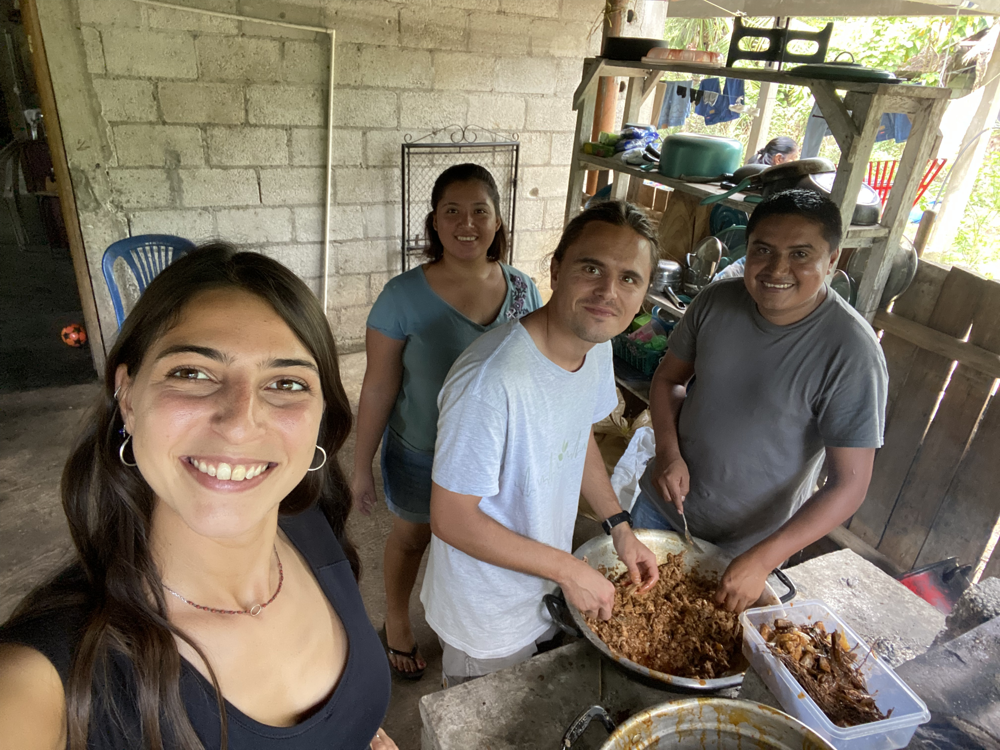

Docentes formados
Con CUDEP-USAC organizamos un Ciclo de Conversatorios: 10 encuentros sobre evaluación, aulas heterogéneas, aprendizaje cooperativo y pensamiento computacional, junto con Scholas Occurrentes y Hospitalidad Digital.
Formamos a docentes, estudiantes y comunidades en Petén, Guatemala, desde 2018. Tu donación nos ayuda a continuar.

Por qué la educación
En Petén, la educación abre caminos que con demasiada frecuencia permanecen cerrados. Por eso trabajamos junto a quienes enseñan, estudian y cultivan la tierra.
La educación es el único ingrediente capaz de impulsar un desarrollo sostenible.
Con CUDEP-USAC organizamos un Ciclo de Conversatorios: 10 encuentros sobre evaluación, aulas heterogéneas, aprendizaje cooperativo y pensamiento computacional, junto con Scholas Occurrentes y Hospitalidad Digital.
Llevamos educación climática a las aulas para jóvenes de 13 a 17 años. Partimos de lo que ven cada día en su territorio.
La formación agrícola comparte prácticas útiles para el trabajo cotidiano y el cuidado de la tierra.

Era 2018. Un grupo de jóvenes italianos y guatemaltecos sentados a la mesa se preguntó: ¿qué necesitan realmente las comunidades de Petén? La respuesta era sencilla y difícil a la vez: educación de calidad, herramientas concretas y conexión con el mundo.
De esa comida nació Comparte, un nombre que en español significa comparte. Hoy trabajamos en Guatemala con proyectos de formación universitaria, educación ambiental y trabajo junto a comunidades rurales.
"Creemos que la educación es el único ingrediente capaz de impulsar un desarrollo sostenible."

Entre 2018 y 2020 llevamos proyecciones de cine en español a 7 comunidades rurales de Petén, junto con el ICAIC cubano. Esas noches son el punto de partida de Comparte: una forma concreta de compartir cultura donde llegaba poco. De ahí comenzó todo lo demás.
Equipo directivo
Andrea Pesce · Presidente · Cofundador de Comparte y CEO de zeroCO2.
Irene Culcasi · Vicepresidenta · Pedagoga e investigadora en service-learning.
Virgilio Galicia Gregorio · Liaison Guatemala · Referente de las comunidades indígenas de Petén.
En las comunidades rurales de Petén donde zeroCO2 planta árboles, ofrecemos formación agrícola. Hablamos de tierra, cosechas y prácticas útiles cada día.
Seminarios en línea con docentes europeos para estudiantes y docentes de CUDEP, el centro universitario más aislado de la universidad pública de Guatemala. Desde 2018, 1.500 personas formadas.
Un programa de 5 módulos sobre la crisis climática para jóvenes de 13 a 17 años en comunidades rurales. La primera edición reunió a 27 estudiantes en Nuevo Horizonte, junto con INAB y MARN.
Banca Etica
IT27J0501803200000016738783
Titular: Comparte
Concepto sugerido: donación libre.
¿Quieres donar cada mes? Configura una transferencia periódica desde tu banco con estos datos.
El pago con tarjeta estará disponible próximamente mediante Mollie, un proveedor europeo. Mientras tanto puedes usar la transferencia.
5×1000
También puedes destinar el 5×1000 a Comparte con el código fiscal 97977810585. No tiene costo adicional.
Cómo destinar el 5×1000 (se abre en una nueva pestaña)Las donaciones a Comparte pueden tener beneficios fiscales según la normativa italiana. Guarda el comprobante de la transferencia.
Indica el código fiscal 97977810585 en el apartado correspondiente de tu declaración fiscal italiana. Firma en el mismo recuadro. No tiene costo ni reduce tu devolución.
Comparte trabaja desde 2018 en Petén, Guatemala. Formamos a docentes y estudiantes, llevamos educación climática a escuelas y formación agrícola a comunidades rurales.
Sí. Puedes hacer una transferencia a Banca Etica, IBAN IT27J0501803200000016738783, a nombre de Comparte. Guarda el comprobante.
Próximamente, mediante Mollie, un proveedor europeo. Los datos de tu tarjeta nunca pasan por nuestro sitio. Mientras tanto puedes usar la transferencia.
Los fondos van a los tres proyectos activos en Petén: formación para estudiantes de USAC, educación climática en Nuevo Horizonte y actividades agrícolas con comunidades campesinas. La rendición se publica cada año en la sección Transparencia.
Sí. Andrea Pesce es cofundador de ambas. zeroCO2 planta árboles en comunidades rurales de Petén y Comparte lleva formación agrícola y acceso a la educación a esas mismas comunidades. Las dos organizaciones son independientes y colaboran en el territorio.
Pocos correos al año: qué hacemos, a dónde van los fondos y cuándo puedes apoyar.
SuscríbeteRecibirás un correo: ábrelo y confirma tu suscripción. Aviso de privacidad.